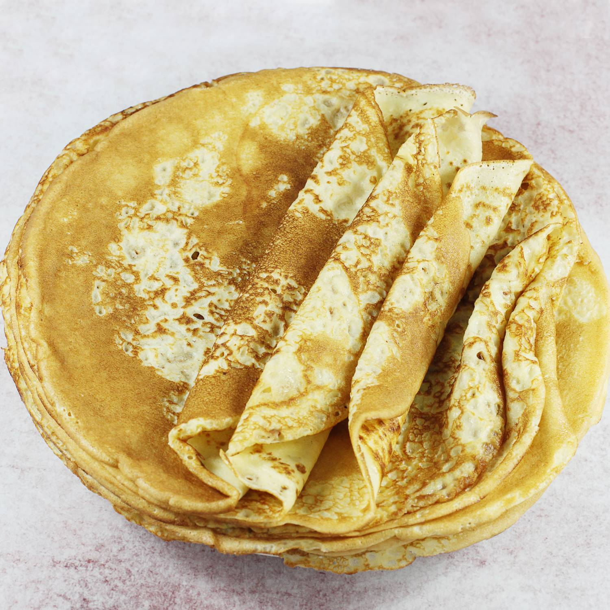
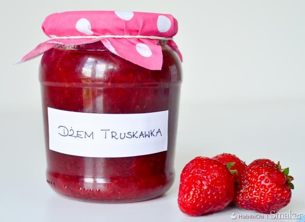

50 g posiekanych orzechów włoskich lub pekan + do dekoracji
75 g drobno pokrojonego ananasa (świeżego lub z puszki) lub jabłka
50 g wiórków kokosowych
200 g mąki
1/2 łyżeczki proszku do pieczenia
po 1 łyżeczce sody i cynamonu
szczypta soli
Przygotowanie:
Jajka ocieplić w temperaturze pokojowej. Ubić je do podwojenia objętości. Dodać cukier i dalej ubijać aż masa będzie gładka i puszysta. Wciąż ubijając na wysokich obrotach, dolewać ciągłym, cieniutkim strumieniem olej.
Dodać marchewkę, ananasa, orzechy, wiórki kokosowe i delikatnie wymieszać. Piekarnik nagrzać do 150 stopni C.
Do osobnej miski przesiać mąkę, dodać proszek do pieczenia, sodę, cynamon i sól, wymieszać. Przesypać do miski z marchewką i delikatnie połączyć wszystkie składniki.
Ciasto wyłożyć do formy o średnicy 24 cm wyłożonej papierem do pieczenia. Piec przez 1 godzinę lub do suchego patyczka.
Ciasto Marchewkowe
Sernik
Składniki
1 kg zmielonego twarogu
250 g miękkiego masła
1 i 1/3 szklanki cukru pudru
6 jajek
1 opakowanie cukru wanilinowego
150 ml śmietanki 36%
4 łyżki mąki ziemniaczanej
Składniki:
1 kg zmielonego twarogu
250 g miękkiego masła
1 i 1/3 szklanki cukru pudru
6 jajek
1 opakowanie cukru wanilinowego
150 ml śmietanki 36%
4 łyżki mąki ziemniaczanej
Przygotowanie:
Miękkie masło ubić na puszysto, stopniowo dodawać po jednym żółtku na przemian z łyżką cukru pudru, cały czas dokładnie ubijając składniki.
Zmniejszyć obroty miksera do średnich, dodać zmielony ser i połączyć. Teraz dodawać po kolei: cukier wanilinowy, śmietankę oraz mąkę ziemniaczaną cały czas miksując składniki na jednolitą masę. Na koniec wymieszać (delikatnie, ale dokładnie) z ubitymi na sztywno białkami.
Przygotować tortownicę o średnicy 26 cm, posmarować masłem i wysypać bułką tartą lub mielonymi migdałami lub dno wyłożyć papierem do pieczenia.
Masę serową wyłożyć do tortownicy i wstawić do piekarnika nagrzanego do 170 stopni C. Piec przez 60 minut. Sernik studzić stopniowo wyjmując z piekarnika (najpierw po trochu otwierając drzwiczki i lekko wysuwając sernik, w końcu wyjąć z piekarnika). Zrumieniony wierzch sernika posypać cukrem pudrem lub polać polewą czekoladową.
Kremówka
Składniki
Ciasto
300 g mąki pszennej
5 łyżek cukru
250 g masła, zimnego
125 g śmietany 18% (gęstej, kwaśnej)
Krem
3 szklanki (750 ml) mleka 3,2%
50 g masła
100 g cukru pudru
1 opakowanie cukru wanilinowego
3 żółtka
3 łyżki mąki pszennej
4 łyżki mąki ziemniaczanej
Składniki:
2 opakowania ciasta francuskiego po 275g (muszą być dwa kawałki ciasta)
1l mleka
4 żółtka
1/2 szklanki cukru (proszę dosłodzić do smaku)
1 duże opakowanie cukru wanilinowego 32g
1 szklanka mąki pszennej (użyłam tortowej)
500ml śmietanki kremówki 30% lub 36%
3-4 łyżki cukru pudru
1 fix do śmietany
250g masła lub margaryny w temperaturze pokojowej
Przygotowanie:
1. Ciasto francuskie wyłożyć na blaszkę (blaszkę wyłożyłam papierem do pieczenia) i wstawić do nagrzanego piekarnika. Piec w temperaturze 220oC na funkcji góra-dół przez około 15-18 minut, aż ładnie się przyrumieni. Piekłam na drugiej od dołu półce piekarnika. Po wyjęciu z piekarnika odstawiamy do całkowego ostygnięcia.
2. Drugi blat ciasta francuskiego pieczemy tak samo, tylko przed włożeniem do piekarnika proszę nakłuć go widelcem.
3. Do 1/2 litra mleka dodać żółtka, wsypać mąkę, cukier, cukier wanilinowy i krótko wymieszać mikserem.
4. Pozostałe mleko zagotować w rondelku z grubym dnem, wlać rozmieszaną mąkę z żółtkami i cały czas mieszając, zagotować (na początku mogą powstać grudki, ale proszę się nie przejmować tylko dalej energicznie mieszać, w końcu powstanie jednolity budyń). Zdjąć z ognia i odstawić do ostygnięcia, ma mieć temperaturę pokojową.
5. Masło ucierać mikserem ustawiony na najwyższe obroty przez około 3-4 minuty. Następnie w 4-5 partiach dodać ugotowany budyń, po każdym dodaniu chwilę ucierać mikserem, aż budyń połączy się z masłem.
6. Śmietankę kremówkę ubić na sztywno z fixem i cukrem pudrem.
7. Na ciasto francuskie, które było ponakłuwane widelcem, wyłożyć równomiernie masę budyniową. Na wierzchu rozsmarować ubitą śmietankę i przykryć drugim ciastem francuskim. Ciasto wstawić do lodówki na parę godzin, aż dobrze się schłodzi.
8. Kremówkę kroić ostrym nożem (ciasto trochę się kruszy) i przed podaniem posypać cukrem pudrem.
Udanych wypieków:)
Hot-Dog
Składniki
1 parówka z najlepszego pieska
1 podłużna bułka
1 ogórek kiszony
duża ilość keczapu
Składniki:
Cztery podłużne bułki lub dwie bagietki
Cztery dobrej jakości parówki lub cienkie kiełbaski
Garść rucoli
Jedna rzodkiekwa
Marynowana dyna w kostkach
Pokrojona w cieniutkie piórka cebula
Sosy: chrzan i konfitura z dzikiej róży
Przygotowanie:
Bułki przekroiłem wzdłuż prawie do samego końca, ale tak aby obie połówki trzymały się razem dość solidnie, a następnie włożyłem na kilka minut do rozgrzanego do temp. 150 st. C piekarnika.
W tym czasie w rondelku z gotującą się wodą podgrzałem również kiełbaski
Bułki po wyjęciu z piekarnika posmarowałem dość dokładnie przygotowanymi dla danej wersji hot doga sosami, włożyłem do niej gorącą kiełbaskę i zabrałem się za umieszczanie z bułce dodatków:
Do wysmarowania wnętrza bułki użyłem ostrego chrzanu i konfitury z dzikiej róży. Konfitura taka nie jest zbyt słodka i świetnie uzupełnia się z ostrym chrzanem.
Kiełbaskę włożoną do bułki doprawiłem jeszcze z wierzchu odrobiną chrzanu
Wzdłuż kiełbaski ułożyłem kilka listków rucoli, a na niej kostki marynowanej w occie dyni
Na samą górę powędrowały cieniutkie piórka cebuli.
Pyszne? To mało powiedziane – musicie sami spróbować :)
Nalesniki

Składniki:
1 szklanka mąki pszennej
2 jajka
1 szklanka mleka
3/4 szklanki wody (najlepiej gazowanej)
szczypta soli
3 łyżki masła lub oleju roślinnego
Przygotowanie:
Mąkę wsypać do miski, dodać jajka, mleko, wodę i sól. Zmiksować na gładkie ciasto. Dodać roztopione masło lub olej roślinny i razem zmiksować (lub wykorzystać tłuszcz do smarowania patelni przed smażeniem każdego naleśnika).
Naleśniki smażyć na dobrze rozgrzanej patelni z cienkim dnem np. naleśnikowej. Przewrócić na drugą stronę gdy spód naleśnika będzie już ładnie zrumieniony i ścięty.
WSKAZÓWKI
Do naleśników deserowych można dodać 1 łyżkę cukru.
Dzem truskawkowy

Składniki:
2 kg truskawek
500 g cukru
dwie cytryny
30 g masła
Przygotowanie:
Owoce myjemy i oczyszczamy z szypułek. Następnie wsypujemy do garnka, dodajemy cukier oraz sok z cytryny.
Dżem truskawkowy możemy zrobić na dwa sposoby: metodą "babciną" oraz nowoczesną. Pierwsza polega na tym, że rezygnuje się z chemicznych dodatków. Dżem truskawkowy polega na powolnym gotowaniu owoców do momentu, w którym zgęstnieją i uzyskają konsystencję dżemu. Trwa to zwykle około 3 godzin.
Ci, którzy są w ciagłym niedoczasie, mogą skorzystać z metody bardziej współczesnej. Do owoców trzeba dodać zagęstnik (dżemfix, żelfix itp.), dzięki czemu znacznie skraca się czas przygotowywania konfitury.